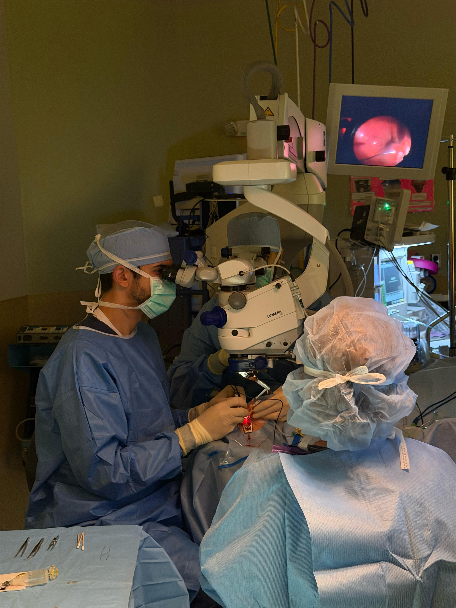

Compassionate retina care with precision and clarity.
Ali R. Salman, MD provides comprehensive evaluation and surgical treatment for retinal conditions. Patients benefit from attentive care, advanced imaging, and a commitment to protecting vision.

Retina surgeon focused on long-term vision health.
Dr. Salman is fellowship-trained in vitreoretinal surgery. He partners with patients and referring doctors to deliver thoughtful treatment plans and timely surgical care.

Advanced diagnosis and treatment for retinal disease.
We provide medical and surgical care for complex retinal conditions using modern imaging and proven surgical techniques.
Diabetic Retinopathy
Laser, injections, and surgery to preserve vision and reduce complications.
Learn moreRetinal Detachment
Rapid evaluation and surgery to reattach the retina and protect vision.
Learn more
Personalized care supported by advanced technology.
Every visit includes detailed imaging, a clear explanation of findings, and a tailored treatment plan. Our team coordinates closely with referring physicians to keep care seamless.